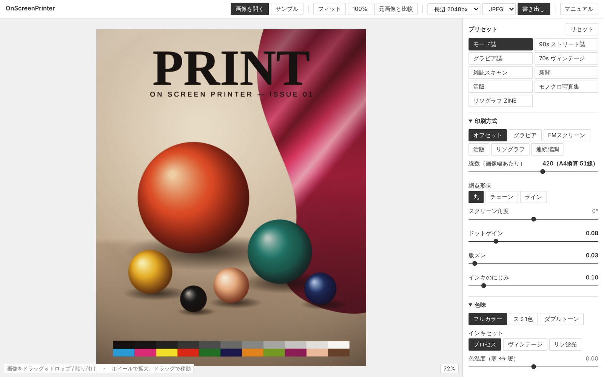
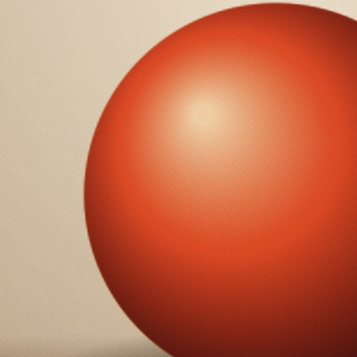
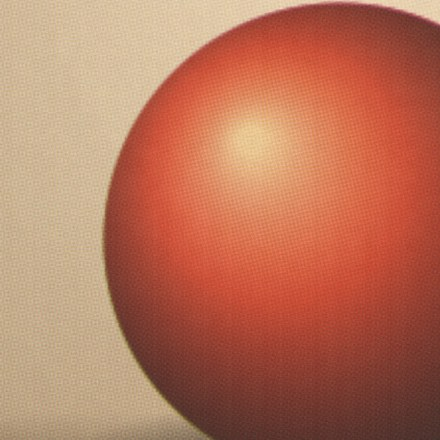
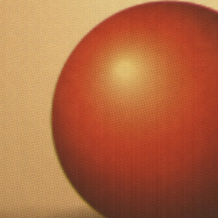
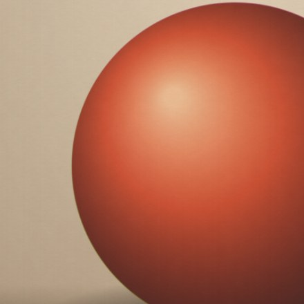
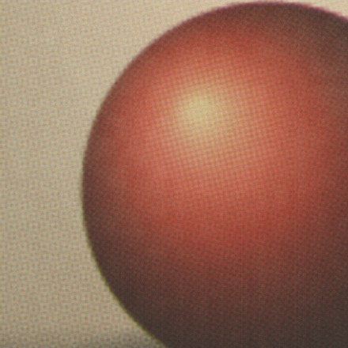
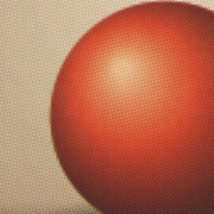
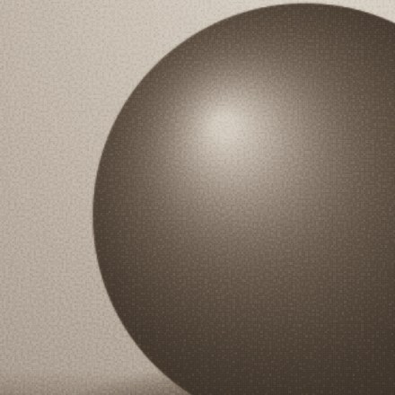
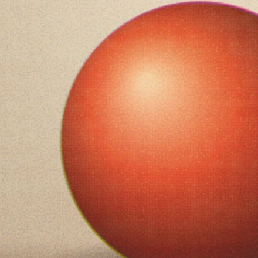

OnScreenPrinter マニュアル
写真に、雑誌などの印刷物の質感を与えるツール
1. OnScreenPrinter とは
写真を、ファッション誌・グラビア誌・新聞・リソグラフなどに印刷したような見た目に変換するツールです。 フィルタで模様を重ねるのではなく、実際の印刷と同じ順番で計算しています。
- 分版：写真を C（シアン）・M（マゼンタ）・Y（イエロー）・K（スミ）の4色のインキ量に分ける
- 網点化：インキ量を、印刷方式ごとの網点（小さな点の集まり）に置き換える
- 刷り重ね：紙の上に4色のインキを重ねる。版ズレ・にじみ・インキむら・紙の質感もここで加える
網点は、本物の印刷物を見るときと同じく「意識させないもの」として扱います。初期設定では軽いぼかしがかかり、網点はぼけ・紙目・粒状感の中に溶け込んで、うっすらとした質感として残ります。 ぼかしを下げて拡大すると、ロゼット模様（4色の網点がつくる花びら状の模様）も確認できます。 さらに「スキャン」をオンにすると、印刷した誌面をスキャナで取り込んだ画像も作れます。
画像はすべてお使いのブラウザの中で処理されます。インターネットへの送信は一切ありません。
2. 起動と動作環境
起動
- 配布された zip ファイルを展開（解凍）します。
- 展開したフォルダの中にある
index.htmlをダブルクリックします。 - ブラウザが開き、サンプル画像が表示されれば準備完了です。
インストールやインターネット接続は不要です。フォルダごと好きな場所に置いて使えます。
フォルダ内のファイル構成は変えないでください（css・js フォルダが必要です）。
動作環境
| 項目 | 内容 |
|---|---|
| OS | Windows / macOS（PC での利用を推奨） |
| ブラウザ | Google Chrome・Microsoft Edge・Safari・Firefox の最新版（WebGL2 に対応していること） |
| グラフィック | GPU を搭載した PC を推奨。特に「スキャン」は計算量が多いため、GPU がないと非常に遅くなります |
3. 画面の見かた

| 場所 | 内容 |
|---|---|
| 上部のツールバー | 画像を開く・サンプル表示・表示倍率・元画像との比較・書き出し（サイズと形式）・マニュアル |
| 左のプレビュー | 仕上がりを表示します。拡大・移動ができます（5. 表示の操作） |
| 右下の倍率 | 現在の表示倍率です。100% のとき、画像の1画素が画面の1画素になります |
| 右の調整パネル | 上から順に、プリセット・印刷方式・色味・トーン・紙と質感・スキャン |
4. 基本の使い方
- 画像を読み込む
「画像を開く」を押すか、画像ファイルをプレビューにドラッグ＆ドロップします。コピーした画像を Ctrl+V（Mac は ⌘+V）で貼り付けることもできます。 - プリセットを選ぶ
まず、目指す雰囲気に近いプリセットを選びます。 - 調整する
右のパネルで、印刷方式・色味・トーン・紙を調整します。「元画像と比較」を押している間は元の写真が表示されます。 - 書き出す
書き出しサイズと形式を選んで「書き出し」を押すと、画像が保存されます。
調整した内容はブラウザに自動で保存され、次に開いたときも引き継がれます。最初の状態に戻すには、パネル上部の「リセット」を押します。
5. 表示の操作
| 操作 | 動作 |
|---|---|
| マウスホイール / トラックパッドのピンチ | カーソル位置を中心に拡大・縮小 |
| ドラッグ | 表示位置を移動 |
| ダブルクリック | 全体表示と 100% 表示を切り替え |
| 「フィット」ボタン | 画像全体が収まるように表示 |
| 「100%」ボタン | 等倍で表示 |
| 「元画像と比較」ボタン / Space キー | 押している間だけ元の写真を表示 |
| スライダーの数値をクリック | その項目だけ初期値に戻す（スライダーのダブルクリックでも可） |
網点は画像に対して固定されているので、拡大・縮小しても網点の配置は変わりません。網点の様子を確かめるときは 100% 以上に拡大してください。
6. プリセット
よく使う印刷物の雰囲気をまとめた設定です。押すとすべての項目がその値に変わります（インキむらの出方だけは変わりません）。 プリセットを選んだあとに項目を動かしても問題ありません。

モード誌コート紙に高精細なオフセット印刷。網点は控えめで、くっきりとした発色。
90s ストリート誌マット紙にやや粗い網点。黒が浅く、少し色あせた印象。
70s ヴィンテージ退色したインキと日焼けした紙。版ズレとむらが大きめ。
雑誌スキャン175 線で刷った誌面を A4・300dpi でスキャンした画像。
新聞新聞紙に粗い網点。インキが薄く、全体に灰色がかる。
活版凸版で押した網点。網点の縁にインキが溜まる。
モノクロ写真集スミと特色の2色で刷るダブルトーン。FM スクリーンでなめらか。
リソグラフ ZINEリソ用の蛍光インキ。粒の粗さと版ズレが特徴。上の図はいずれもサンプル画像の一部を等倍で表示したものです。
7. 印刷方式
方式の選択
| 方式 | 特徴 |
|---|---|
| オフセット | 雑誌・チラシなどで最も一般的な印刷。規則正しく並んだ網点の大きさで濃淡を表し、4色が重なるとロゼット模様ができる |
| グラビア | 写真集・グラビア誌向けの印刷。格子状の小さな凹みにインキを溜めるため、濃い部分は網点が溶けてなめらかになり、淡い部分は点が欠けることがある |
| FM スクリーン | 同じ大きさの細かい点を不規則に散らす方式。ロゼット模様が出ず、なめらかで精細 |
| 活版 | 凸版を紙に押し付ける方式。網点の縁にインキが溜まり、輪郭が少し荒れる |
| リソグラフ | 孔版印刷。粒が粗く不規則で、インキむらが縞状に出る |
| 連続階調 | 網点を使わない（色味・トーン・紙だけを適用） |
調整項目
| 項目 | 内容 |
|---|---|
| 線数 | 網点の細かさ。画像の横幅に並ぶ網点の数で、大きいほど細かくなります。値の横の「A4換算 ○線」は、画像を A4 の幅に印刷したときの線数（1インチあたりの網点数）です |
| 網点形状 | 丸・チェーン（楕円が鎖状につながる）・ライン（線）。オフセットと活版のみ |
| スクリーン角度 | 網点の並ぶ角度。4色はそれぞれ別の角度（オフセットは C 15°・M 75°・Y 0°・K 45°）で並んでおり、このスライダーは4色をまとめて回転させます |
| ドットゲイン | 印刷で網点が太る量。上げると中間調が濃く、つぶれ気味になります |
| 版ズレ | 4色の版の位置ずれ。上げると輪郭に色のずれが出ます |
| インキのにじみ | 網点の輪郭のぼやけ具合 |
8. 色味
| 項目 | 内容 |
|---|---|
| 色の数 | フルカラー（CMYK 4色）・スミ1色（白黒）・ダブルトーン（スミ＋特色の2色） |
| インキセット | 使うインキの色。プロセス（標準）・ヴィンテージ（くすんだ古いインキ）・リソ蛍光（リソグラフ用の蛍光インキ） |
| 特色 | ダブルトーンで使う2色目のインキの色 |
| 色温度 | マイナスで青み（寒色）、プラスで黄み（暖色） |
| 色かぶり | マイナスで緑寄り、プラスでマゼンタ寄り |
| 彩度 | 色の鮮やかさ |
| インキ濃度（全体） | すべてのインキの濃さ。下げると新聞のように薄く、上げるとこってりした刷り上がりに |
| C / M / Y / K 版の濃度 | 各色のインキの濃さを個別に調整。たとえば C を下げると、シアンが退色したような色になります |
| 墨版の量（GCR） | 暗い部分を CMY の重ねで表すか、K（スミ）で置き換えるか。上げるほど K が増え、色の濁りが減ります |
| 色再現の補正 | インキの色の偏りを見込んで、元の写真の色に近づける度合い。下げると、インキの色がそのまま出た癖のある発色になります |
9. トーン
| 項目 | 内容 |
|---|---|
| 露出 | 全体の明るさ（EV 単位） |
| コントラスト | 明暗の差。プラスで締まった印象に |
| ハイライト | 明るい部分だけの明るさ |
| シャドウ | 暗い部分だけの明るさ |
| フェード | 黒を持ち上げて、古い印刷物のような締まりのない黒にします |
| シャープネス | マイナスでソフトに、プラスで輪郭を強調 |
10. 紙と質感
| 項目 | 内容 |
|---|---|
| ぼかし | 網点をなじませるぼかし。網点の間隔を基準にした強さなので、線数や表示サイズが変わっても網点のなじみ方は同じです。0 で網点がくっきり、0.6 前後で網点がうっすらとした質感として残り、1 でほぼ見えなくなります。写真の絵柄も同じ量だけ柔らかくなります |
| 紙色 | 紙の種類（コート紙・マットコート紙・上質紙・更紙・新聞紙・日焼けした古紙）を選ぶか、右の色見本から自由に指定します |
| 紙の質感 | 紙の繊維や細かな斑点の強さ |
| インキむら | インキの乗り方の不均一さ。大きなむらと細かなむらが重なって出ます |
| 粒状感 | 全体にかかる細かな粒 |
| 黒の浮き | 紙の表面の反射で黒が浅くなる度合い。マット紙・新聞紙らしさが出ます |
| むら・紙目を乱数で作り直す | インキむら・紙の質感・粒状感の出方（模様の配置）を変えます。強さは変わりません |
むらの出方は、画像を読み込むたびに自動で変わります。複数の写真を書き出しても、同じ場所に同じむらが出ることはありません。
11. スキャン
印刷した誌面を、スキャナで取り込んだような画像を作ります。オンにすると、画像の横幅を A4 の幅（横長の画像は A4 横置きの幅）とみなし、 指定した解像度の画素で網点を読み取ります。網点とスキャナの画素が干渉してできる細かな模様や、スキャナのレンズによるぼけが再現されます。
| 項目 | 内容 |
|---|---|
| オン / オフ | スキャンの再現を使うかどうか |
| 解像度 | 150dpi・300dpi・600dpi。書き出す画像の大きさもこの解像度で決まります |
| スキャナのぼけ | スキャナのレンズのぼけ（スキャン画素単位）。「紙と質感」の「ぼかし」に上乗せされます |
雑誌スキャンらしく見せるコツ
- 線数は「A4換算」が 150〜175線 になるように合わせます（プリセット「雑誌スキャン」は 175線）。
- 解像度は 300dpi、スキャナのぼけは 0.5〜0.8px 程度から始めます。
- 網点の模様を残したいときは「ぼかし」を下げ、印刷っぽさを弱めたいときは上げます。
12. 線数と見え方
線数は「画像の横幅に並ぶ網点の数」です。同じ線数でも、画像を表示する大きさによって網点そのものの大きさは変わります。 ただし初期設定ではぼかしで網点がなじんでいるため、見る環境による違いはほとんど気になりません。
| 調整したいこと | 操作 |
|---|---|
| 網点を目立たなくしたい | 「ぼかし」を上げる（線数を上げても可） |
| 網点の粗さを感じさせたい | 「ぼかし」を下げる、または線数を下げる |
| 印刷物の線数に合わせたい | 線数の横の「A4換算 ○線」を見て合わせる（雑誌は 150〜175線が目安） |
プリセットの線数は、iPhone の画面幅いっぱいに表示したときにほどよい粗さになるように決めています。
13. 書き出し
ツールバー右のサイズと形式を選んで「書き出し」を押すと、現在の設定を適用した画像を保存します。
ファイル名は「元のファイル名_プリセットの英字名」です（例：photo_mode.jpg。プリセット適用後に項目を動かした場合は photo_custom.jpg）。
| 設定 | 内容 |
|---|---|
| 長辺 2048px（初期値） | 画像の長い辺が 2048px になる大きさ。iPhone などで見るには十分です |
| 長辺 4096px / 8192px | 大きく表示・印刷したいとき用。ファイルが大きくなります |
| JPEG（初期値） | 容量が小さい形式。長辺 2048px で 1MB 前後です |
| PNG | 劣化のない形式。網点や粒で圧縮が効きにくく、JPEG の 5〜10 倍の容量になります |
| スキャンがオンのとき | 大きさはスキャン解像度で決まります（例：A4・300dpi なら横 2480px）。サイズの選択は無効になり、形式だけ選べます |
14. 困ったときは
「WebGL2 が使えないため動作しません」と表示される
ブラウザが WebGL2 に対応していないか、無効になっています。Chrome・Edge・Safari・Firefox の最新版でお試しください。Chrome の場合は、設定の「システム」で「グラフィック アクセラレーションが使用可能な場合は使用する」をオンにしてください。
動作が重い
- 表示を「フィット」にすると、拡大表示より軽くなります。
- 非常に大きな画像は、あらかじめ長辺 4000px 程度に縮小しておくと快適です。
網点が目立ちすぎる / 見えない
「紙と質感」の「ぼかし」を調整してください。目立ちすぎるときは上げ、見えないときは下げます。線数でも調整できます（上げると細かく、下げると粗くなります）。
色がくすむ・濁る
「色再現の補正」を上げる、「墨版の量」を下げる、「黒の浮き」を下げる、の順に試してください。
設定が初期状態に戻ってしまう
設定はブラウザに保存されます。プライベートブラウズ（シークレットモード）や、閉じるときに閲覧データを消す設定では保存されません。また、フォルダを移動すると別のファイルとして扱われ、設定が引き継がれないことがあります。
プリセットを更新したのに見た目が変わらない
前回の調整内容が保存されているためです。プリセットのボタンを押し直すと、最新の値が適用されます。
15. 仕様と制限
| 項目 | 内容 |
|---|---|
| 読み込める画像 | JPEG・PNG・WebP など、ブラウザが表示できる形式 |
| 処理する解像度 | 長辺 4096px まで。これより大きい画像は縮小して処理します |
| 書き出し | JPEG・PNG 形式、長辺 8192px まで |
| 色の扱い | sRGB の画像として処理します。カラープロファイル（Adobe RGB など）や CMYK の画像の色は正確には扱えません |
| 印刷用データ | 見た目を再現するツールです。印刷会社に入稿する CMYK データの作成には使えません |
| 通信 | なし。画像も設定も外部に送信しません |